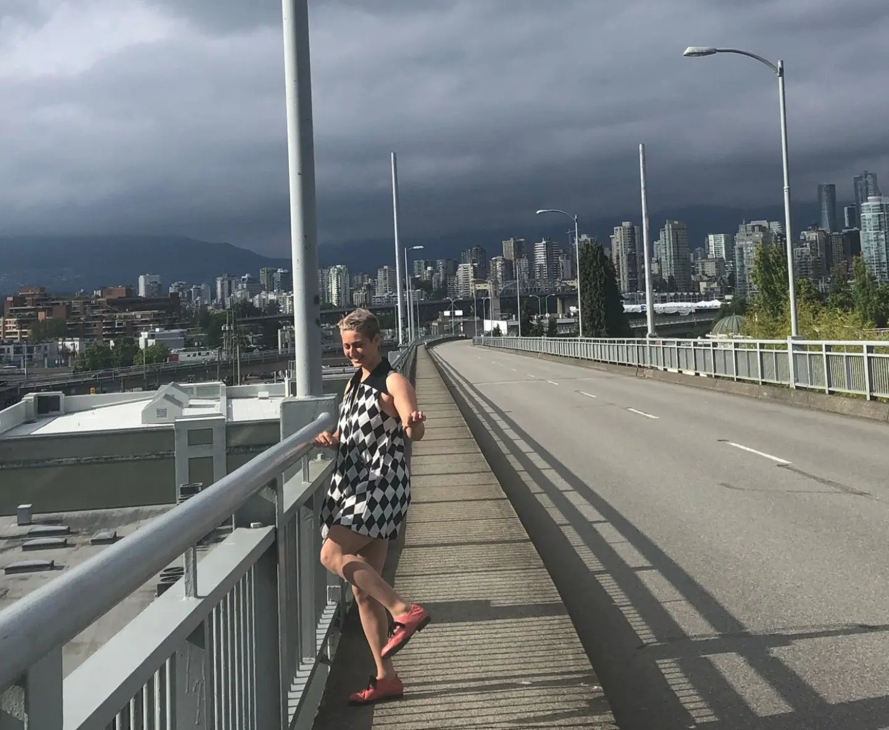

MAKING SPACE FOR DEEP MAPPING: RENDERING THEORY AS PRAXIS
by
LILY DEMET CRANDALL-ORAL
B.S. Honors in Geography, University of Massachusetts Amherst, 2021
A THESIS SUBMITTED IN PARTIAL FULFILLMENT OF
THE REQUIREMENTS FOR THE DEGREE OF
MASTER OF ARTS
in
THE FACULTY OF GRADUATE AND POSTDOCTORAL STUDIES
(Geography)
THE UNIVERSITY OF BRITISH COLUMBIA
(Vancouver)
August 2024
© Lily Demet Crandall-Oral, 2024
The following individuals certify that they have read, and recommend to the Faculty of Graduate and Postdoctoral Studies for acceptance, the thesis entitled:
Making Space For Deep Mapping: Rendering Theory As Praxis
submitted by Lily Demet Crandall-Oral in partial fulfillment of the requirements for
the degree of Master of Arts
in Geography
Examining Committee:
Dr. Trevor Barnes, Professor, Department of Geography, UBC
Co-supervisor
Dr. Luke Bergmann, Associate Professor, Department of Geography, UBC
Co-supervisor
What could it mean to think
with place? To
feel the city? I explore and respond to these questions through deep mapping, or situated, embodied inhabitation as a practice of ongoing and open-ended dialogue with the world. Deep mapping is not defined by opposition so much as articulated through iterative acts of interference with hegemonic forms of representing place, producing geographic knowledge, and rendering spatial research public. This is my theory, at least. My master's research-creation amounts to cultivating a practice of deep mapping, theorizing my interpretation of this capacious practice
through practice, and enacting my theory as praxis. I submit as my thesis a .zip file whose uncompressed contents comprise the website
negative-spaces. To engage my work, please download the compressed file
ubc_2024_november_crandalloral_lily_negative-spaces.zip from the University of British Columbia's institutional open collection of Theses and Dissertations (see
https://open.library.ubc.ca/cIRcle/collections/ubctheses). It can be located by searching my name, Lily Demet Crandall-Oral, in the collection's search bar. Once
ubc_2024_november_crandalloral_lily_negative-spaces.zip is downloaded to a folder on your physical computer (such as Desktop or Downloads), unzip it. You can unzip it either by double clicking the file, or control-clicking it and choosing to unzip with a compression software. Once unzipped, enter the folder
negative-spaces. Control-click (right-click) the file
index.html and "open with" a web browser. Google Chrome is recommended. If the steps to download my thesis locally are not accessible to you due to technical issues or lack of a personal computer, the website which constitutes my thesis can also be accessed by navigating to
negative-spaces.github.io/.
negative-spaces employs form as a tactic for refiguring the boundaries of intelligibility around what counts as a thesis, as fieldwork, and as intellecting others (i.e., interlocutors). In my research practice, which includes the creation of this webbed site, I am guided by slow scholarship and bricolage as necessary self-accommodations as much as an interference with dominant economies of knowledge production. What is rendered here is not a substitution for practice. Rather,
negative-spaces sites a partial account of an ongoing interference praxis.
What could it mean to think with place? To feel the city? How might everyday spatial practices be employed to interfere with hegemonies of knowledge production from within? This project emerged as an exploration and response to these questions through deep mapping, or situated, embodied inhabitation as a practice of ongoing and open-ended dialogue with the world. My master's research-creation amounts to cultivating a practice of deep mapping, theorizing my interpretation of this capacious practice through practice, and enacting my theory as praxis. My thesis is the first MA thesis in the University of British Columbia's history of Electronic Thesis and Dissertation submissions to consist entirely of a website, without a significant research component submitted as text in .pdf form.
We live in a moment where locative technology is ubiquitous. Becoming lost no longer requires going out of one's way. Instead, 'disoriented discovery' (Kurgan 2013) begins with a choice to not reference Google Maps, to turn location off and allow position to remain indeterminate. Spatial awareness of my surroundings has evolved not by following Google Maps from A to B or memorizing its aerial contours, but rather through becoming lost and wandering around. Thus disoriented, I find areas of familiarity connected in surprising ways. I realize the city is not a site with fixed boundaries and determinate properties which preexist encounter and which I, as inhabitant-geographer-cartographer, may irresponsibly separate myself from in order to map from a distanced, exterior position. Rather, the city is performatively constituted as a physical-conceptual field whose emergent topology is iteratively drawn through everyday navigations. As such, the city of my inhabitation and I are entangled, figured and continuously reconfiguring in dynamic relation. My work is research-creation in that it initiates a dialogue with the world and is driven by intellectual and spatial topoi which grasp and lure me forwards even before I comprehend where they lead (Loveless 2019). My thesis is process rather than destination oriented. It renders the story of my journey navigating the field of possibilities opened up when A and B are recognized to be but place holders like latitude and longitude. Take the lemniscate, or infinity symbol, as a figure for practice. The iteration of this form reveals beginning and end to be merely places of turning and return.
negative-spaces is a webbed site itself a space for deep mapping, for nonlinear exploration following ideas that grasp and pull the visitor. For evaluating supervisors and those desiring a guided tour, I have ordered the left-hand menu (
navigate elsewhere>>) by my recommended navigation. My argument unfolds across six pages as follows:
negative-spaces/disorientation.html introduces my research questions, aims, and the importance of learning through disorientation;
negative-spaces/practice.html thinks through practice towards the formulation of a theory of deep mapping;
negative-spaces/interference.html further elaborates on my theorization by situating it within a theoretical and methodological framework of diffraction;
negative-spaces/tactics.html describes my tactics of practice and how they interfere with hegemonic economies of knowledge production in ways that matter;
negative-spaces/rendering.html argues that making space for deep mapping renders theory as praxis;
negative-spaces/superposition.html acknowledges that many stories exist in the landscape, this being but one whose determinacy necessarily excludes all other possible configurations.
negative-spaces/rhythmanalysis.html, the seventh page, is a collection of rhythms and patternings that exceed measure. On each page of
negative-spaces, you will notice two additional links in the left-hand menu (
navigate elsewhere>>).
FRONT_MATTER will bring you back to this, the index, page.
CODE_SIDE will open the code that formats the contents of the page in an external window. This view is hosted by Github, and therefore not technically part of my submitted thesis. If you have a source code editor (like Visual Studio Code) installed on your personal computer you can open any .html document within
negative-spaces with this software and view the code in this manner.
To my co-supervisors Dr. Luke Bergmann and Dr. Trevor Barnes: Thank you for bearing with me as I got my bearings. Thank you both for your patience, understanding, and encouragement along the way. Trevor, thank you for your good faith readings, your insistence on clarification, and for framing what I perceived to be blunders as 'performance art'. Luke, thank you for advocating on my behalf, believing in me, and all the thoughtful conversations shared.
I want to acknowledge Dr. Andrea Tesolin at Foundry Vancouver-Granville. Navigating healthcare in a foreign country is stressful, especially when you rely on medicalization to receive accommodations and medications that support your thriving. I am truly grateful for the care I received at Foundry without which persisting in this work would not have been possible.
To Ceall Quinn, thank you for reading my work with enthusiasm, for suggesting literature I might find interesting, and for talking and walking through ideas in practice with me since day one. Thank you also to Catman, my most dedicated Research Assistant without whose purring affection I could not have persisted through this past year. How appropriate that you claimed my box of tactics readings and a salvaged sweater that sat on my desk as your day bed. To my intra-locutor Bella Pojuner: my thinking and being are deeply diffracted through our praxis. Thankful for the dialogue we could share.
Thank you to my godmother for loving me my whole life long. Thank you to my parents for forever supporting my artistry and education. Mom, I credit our year spent backpacking and roadtripping together for my interest in maps, navigation, and spatial thinking; look where all our getting lost landed me! Baba, thank you for teaching me anything is possible. I am proud to be, as you say, a third generation geo- academic: geology, geophysics, and now geography.
Lastly, part of my acknowledgement practice was sending a hand written card to each teacher and mentor I've had in my academic or otherwise life. I sent my acknowledgements on cards I designed and printed myself using the Epson Workforce Pro 4740 I found on the curbside, paper and ink I bought with my Faculty of Arts Graduate Research Award, Larry Bell Grant, and Emily Acheson Support Fund, and of course, sitations made within and as part of the city.
1 / 9

2 / 9

3 / 9

4 / 9

5 / 9

6 / 9

7 / 9

8 / 9

9 / 9

❮
❯
This work is dedicated to the Granville Bridge.
